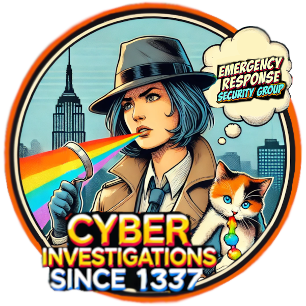

E mergency R esponse S ecurity G roup
.-. .-. .-. .-. .-. .-. .-. .-. .-. .-. .-. .-. .-. .-. .-. .-. .-.
secur\ity-res\earch♥t\hreat-h\unting♥\reverse\engineer\♥inves\tigatio\ns♥scri\pting♥l\inux-uni\x♥host\ing♥reg\istrars\exploit\s♥vuln♥\
' `-' `-' `-' `-' `-' `-' `-' `-' `-' `-' `-' `-' `-' `-' `-' `-' `

Ditch the One-Size-Fits-All Bottleneck
Are you tired of cookie-cutter solutions that don't fit your unique need? I offer a fully
customized approach tailored specifically to your business. Say goodbye to long hold times
and confusing consultant jargon—instead, you'll have direct access to a knowledgeable
professional dedicated to enhancing and securing the threat landscape at your organization.
I specialize in Cyber Security with two decades of experience. As I am building a portfolio
local Washington state but able to serve the entire country, I’m willing to offer introductory
rates as an advisor for security offerings as described.
Unlock Growth with Expert GuidanceStrategic Insights, Tailored Solutions
Aside from subjective measurement of value, many businesses typically invest over $40,000 for
similar services. We have developed a cost-effective monthly pricing structure that ensures
you receive top-tier consulting without the hefty price tag. This approach not only allows us
to earn your trust as high-quality consultants but also fuels the growth of our boutique Cyber
Security Firm. Whether you require expert consultation, detailed explanations, validation of
security concerns, comprehensive audits, or innovative guidance that blends critical and
creative thinking, we are here to assist. Our services are priced to be accessible for the level
of value, ensuring that superior cybersecurity support is within your reach.
Navigate the Forgotten Art of Accuracy
I offer tailor-made solutions and expert insights essential for any business, all at a price
that’s accessible for small to medium-sized business owners. Plus, I'm based in Illinois and
come highly recommended! Skip the overpriced services of large firms—let me help lighten
your load and provide the vigilant oversight you need at a fair and transparent
rate. I will provide you with custom solutions and a trained eye that every business needs at a
cost small to medium business owners can afford. What’s better is that I’m local to Washington,
but I can work remotely anywhere within the domestic United States. My work comes with glowing
reviews! Don’t get ripped off by an enterprise firm, allow me to take the weight off your
shoulders and be the extra set of eyes you need for a reasonable rate.
_,.-'~'-.,__,.-'~'-.,__,.-'~'-.,__,.-'~'-.,__,.-'~'-.,_
Balance the Fulcrums of the Cyber Terrain
with
☺ Rhiannon Williams ☺
Twenty-six years of experience engaging in technical leadership, problem solving, attention to detail, as
well as organizational tactics to improve operational accuracy. Prefer technical focus sitting above
incident response, network security, malware analysis and forensic investigations. IMHO, title is
not as important as introductions and position in heirarchy (reporting to legal teams instead of IT).
Creative Math Brain. Formal Private Investigation education, corporate security background. Full
understanding of OSINT, cyber security and privacy realm, reconnaissance, and surveillance. While
empathy is appreciated, I am not here to be your token diversity candidate, but I would like to
tackle the issues that you face. I have great skill (and a brain) which I want to use!
Let me creatively solve your problems for you.
Kicking all your @ since 1337!
_,.-'~'-.,__,.-'~'-.,__,.-'~'-.,__,.-'~'-.,__,.-'~'-.,_
❦❦❦ Professional Skills ❦❦❦
.--------------------------------------------------.
/ .-. -RHIANNON WILLIAMS- .-. \
| / \ Started in the industry at age 16, / \ |
| |\_. | working dialup ISPs. 28.8 anyone? | /| |
|\| | /| I've worked for telecoms, registrars,|\ | |/|
| `---' |data centers, consultants, webhosting,| `---' |
| | vpn providers, video game companies, | |
| | network security, malware research. | |
| | Cyber Security Professional, Writer, | |
| |Detective. Security Research, Pentests| |
| |Incident Response, Corporate Security,| |
| |Espionage Investigation, OSINT, Grey | |
| |Hat. Blue, Red, Purple, all Teams. | |
| | I love malware. I love exploit dev. | |
| | Twenty-Six Years Experience. | |
| |--------------------------------------| |
\ | | /
\ / \ /
`---' `---'
_,.-'~'-.,__,.-'~'-.,__,.-'~'-.,__,.-'~'-.,__,.-'~'-.,_
☎✉ Hyperlinks ☎✉
_,.-'~'-.,__,.-'~'-.,__,.-'~'-.,__,.-'~'-.,__,.-'~'-.,_
♡ Fav Quotes ♡
- “The problem of viruses is temporary and will be solved in two years.” -- John McAfee, 1988.
- "A calm sea never made a skilled sailor." ~ Franklin D. Roosevelt
- "The secret of getting ahead is getting started." ~ Mark Twain
- "He who spares the wicked injures the good.” ~ Lucius Annaeus Seneca
- "In the midst of chaos, there is also opportunity." -Sun Tsu
- "The liar's punishment ... is that he cannot believe anyone else." - George Bernard Shaw
- "The secret of getting ahead is getting started." - Mark Twain.
_,.-'~'-.,__,.-'~'-.,__,.-'~'-.,__,.-'~'-.,__,.-'~'-.,_
♕ Services Overview ♕
_,.-'~'-.,__,.-'~'-.,__,.-'~'-.,__,.-'~'-.,__,.-'~'-.,_
Exploit Development
As an exploit developer, my role revolves around understanding, finding, and exploiting
vulnerabilities in software and systems. I begin by identifying potential vulnerabilities, either
through manual review, using tools that scan for common weaknesses, or by keeping up with
newly disclosed vulnerabilities on platforms like CVE (Common Vulnerabilities and Exposures).
Writing an exploit requires not just coding skills,but also creativity and persistence, as
some vulnerabilities are complex and require sophisticated approaches to be exploited effectively.
After developing an exploit, I document the findings and sometimes prepare a proof of concept
that demonstrates the exploit in action.
_,.-'~'-.,__,.-'~'-.,__,.-'~'-.,__,.-'~'-.,__,.-'~'-.,_
☎✉ Projects ☎✉
_,.-'~'-.,__,.-'~'-.,__,.-'~'-.,__,.-'~'-.,__,.-'~'-.,_
☎✉ Research ☎✉
_,.-'~'-.,__,.-'~'-.,__,.-'~'-.,__,.-'~'-.,__,.-'~'-.,_
☎✉ Security Blog ☎✉
_,.-'~'-.,__,.-'~'-.,__,.-'~'-.,__,.-'~'-.,__,.-'~'-.,_
☎✉ Resume ☎✉
_,.-'~'-.,__,.-'~'-.,__,.-'~'-.,__,.-'~'-.,__,.-'~'-.,_